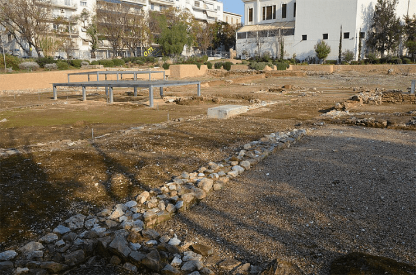

As archaeologists dug at a spot in Athens, Greece slated for a new modern art museum in 1996, they looked for signs of ancient remnants to ensure any ruins wouldn’t be damaged by future construction. What they found at the site, which at the time included an unpaved parking lot, was quite intriguing: the traces of a large building that once spanned more than 30,000 square feet and had been significantly damaged by military installations between the 19th century and 1966.
Archaeologist Eutychia Lygouri-Tolia, who worked on the excavation, said the structure was once an athletic training center at the Lyceum, a sanctuary dedicated to Apollo that hosted a school established by the Greek philosopher Aristotle in 335 B.C. This physical evidence aligned with literary sources from the time, which claimed the Lyceum sat southeast of the ancient city. This week in 1997, Greek Minister of Culture Evangelos Venizelos announced the first physical evidence of the Lyceum’s location—some researchers had their doubts, but it’s generally considered to be accurate.

EDUCATIONAL ECHOES: The lingering evidence of the Lyceum at an archaeological site in Athens. Photo by Carole Raddato / Wikimedia Commons.
The Lyceum brought in scholars from throughout the Mediterranean and laid the foundation for higher education. It was the first known institution to “combine systematic research activity into every branch of knowledge with a huge library,” according to Classics scholar Edith Hall, along with public lectures and courses taught at what we now consider undergraduate and postgraduate levels. Aristotle’s school was known as the Peripatetic school, a term that may refer to ancient pathways at the Lyceum or Aristotle’s tendency to lecture as he strolled about.
Read more: “The Bridge From Nowhere”
Before Aristotle set up the Peripatetic school, plenty of intellectual icons spent time at the Lyceum. Socrates and Protagoras, for instance, often came by to debate and lecture during the late fifth century B.C. During Aristotle’s time there, he taught, penned the majority of his dialogues and philosophical treatises, and gathered literature for Europe’s first-ever library. The Peripatetic school was part of the ephebeia, a military and educational program that sought to churn out “well-conditioned young citizen warriors to defend the city.”
The school continued to thrive after Aristotle’s death in 322 B.C., but it experienced multiple violent attacks in succeeding centuries. In 86 B.C., the Roman general Sulla led an attack on Athens, which included significant damage to the Lyceum, and another brutal blow arrived with the sack of Athens by the enemy Heruli people in 267 A.D. Finally, in 529 A.D., Roman Emperor Justinian shuttered all of the city’s philosophical schools.
Today, you can visit the ruins of the Lyceum—but only small hints of the once-grand institution remain. 
Enjoying Nautilus? Subscribe to our free newsletter.
Lead image: Gustav Spangenberg